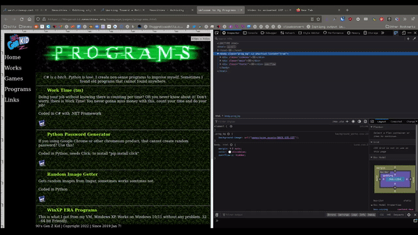
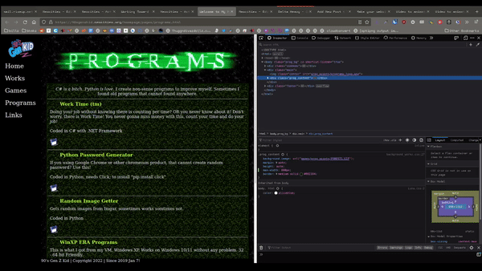

Make a website responsive

A disclaimer
The complexity of a layout determines how complicated it’s going to be to make responsive. You will find it very difficult to make your site responsive if:
- The actual positioning of your layout elements (the “boxes”) are heavily reliant on images.
- Your layout is highly reliant on position:absolute;.
- Your layout is highly reliant on tables.
Set the viewport
The viewport refers to the size of the screen or window the website is being viewed on. When we resize a browser window, we are changing the viewport.
You’ll need to include a special viewport meta tag in your <head></head> tags of every page. This sets the viewport, which controls how it scales on smaller devices.
<meta name="viewport" content="width=device-width, initial-scale=1.0">Use the inspect tool
Using the browser's built-in inspect tool is a critical part of making your site responsive. I made a video demonstrating how to do this.
Making a site mobile-friendly is about investigating what happens when your website is resized, and then changing the code to make it do something different.
Before you can know what to change, you have to observe your website under specific conditions. Mobile device viewports are long and narrow, unlike desktop ones.
The easiest way to troubleshoot a website is to press CTRL+SHIFT+I (CMD+Option+I on Mac) to open the Inspect Tool.
If the panel shows up at the bottom of the screen, you can change the options to display on the right side.
Once it is on the right side, you can click and drag this panel to resize your screen.

At some point while narrowing the above viewport, the text gets cut off. This is the type of thing we should look for, and use as our starting point.
The exact pixel width of when the website ‘breaks’ or goes offscreen is known as a breakpoint. Media queries (covered below) use breakpoints to control what happens at a certain width, but we don’t need to use one of those just yet.
Investigate fixed widths
A fixed width is any width: on any element.
You only need to remove the widths larger than 320px. Why? Because the narrowest device viewport currently in use is 320px. If you had an image say, set to 500px, it would run off the screen on these devices.
For items larger than 320px, we should use max-width: instead. This will allow the image to become smaller when viewed on small screens.
I've changed the website above's width: to a max-width: and here is how the behavior changes when resized:

Now instead of the content getting cut off when resized, it stays onscreen.
Dealing with sidebars
Sidebars make things difficult because they take up horizontal real estate, which phones have very little of.
In the case of making existing sidebars responsive, sometimes it's easier just to change out your HTML and CSS for something like flexbox than trying to make the original HTML work - depending on how you originally coded it.
Media queries
Media queries tell the website to display specific CSS when the site is viewed at a certain size.
Writing media queries, again, is made much easier with the use of the inspect tool. In order to write one, you need to know the exact elements you want to change and the width at which to trigger the changes. Even if you don't use the inspect tool, having it open can allow you to see the exact width of the page in pixels as you're resizing it.
The syntax for a media query is as follows:
@media only screen and (max-width: 800px) {
/* extra css here */
}This query is triggered when the website is viewed at 800px.
With simple layouts, you might only need one media query. For more complex layouts, you might need to make a few for the different points at which your site needs to change.